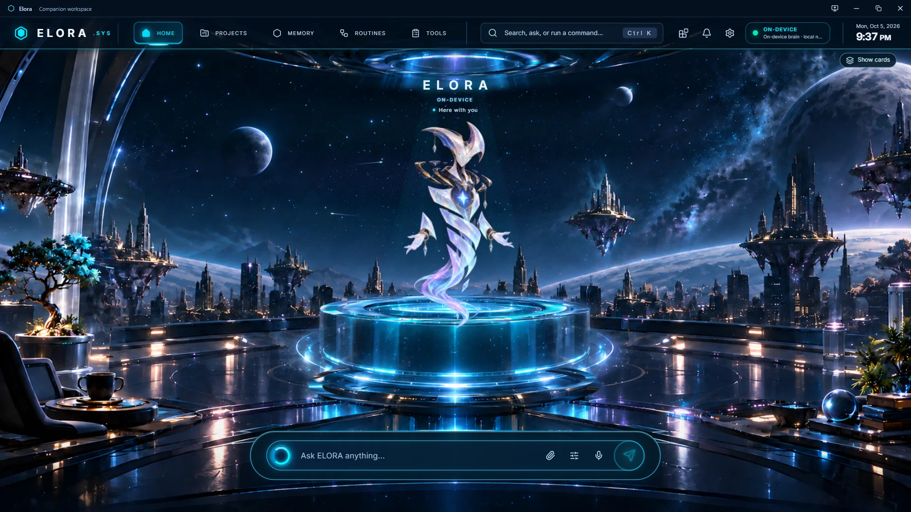

ELORA
HERE WITH YOU
Elora is the AI companion that lives on your PC. She sees what you see, hears you when you ask, remembers what matters — and never ships your life off to a server.
GOOD EVENING
Let's do something brilliant together.
Your companion, on your hardware.
MEMORY
Every fact dated. Nothing silently overwritten.
SYSTEM STATE
VRAM
4 GB
CLOUD
none
MODEL
● Ready
yaad dilana 5 baje, call mom|
Elora — Done. I'll remind you today at 5:00 PM: call mom.
CONVERSATION FIRST
Elora is always thinking in the background. The second you speak, she drops it — mid-thought if she has to — and gives you her full attention. Nothing's lost. She picks it back up when you're done.
WHEN YOU'RE HERE
Interrupt her. She'll stop and answer the new thing.
Replies stream and are spoken sentence by sentence. Talk over her and she drops the rest of what she was saying.
WHEN YOU'RE AWAY
Come back after two days. She knows what you missed.
Which reminders went off, what got done, how long you were gone — she keeps the thread.
A CONTINUOUS MIND
PERCEIVE
5s
A quick, cheap look at what's happening. Act on it, save it for later, or let it go — the AI model only weighs in when it's genuinely unclear.
REASON
30s
When something matters, she thinks it through — step by step, using tools if she needs them. Every conclusion is checked before it reaches you.
REFLECT
5min
She steps back to spot patterns and correct herself. Every night she tidies what she learned and lets go of what no longer matters.
A small model that doesn't fall over. Every decision has a plain-code backup worked out first — so if the AI returns nonsense, she already has a sensible answer.
WHAT SHE DOES
SPEAK
Push-to-talk · ~1s to text
Hold to talk. Talk over her — she'll stop.
Short turns, reacts first, and follows you between English and Roman Urdu without missing a beat.
TIME
Your zone · your words
"Agle juma"? "Parson"? She knows the date.
Dates are calculated, never guessed. Say "remind me after lunch" and it lands at the right time, in your time zone.
MEMORY
Dated · never overwritten
Remembers everything. Rewrites nothing.
Every fact carries a date, so old news never reads as current. Ages and anniversaries are worked out fresh — never stored to go stale.
VISION
Reads your screen
Sees your screen. Never takes orders from it.
Ask about what's in front of you. Stuck on an error? She notices — and offers help without nagging.
ACTION
~70 built-in actions
She gets it done. You approve the risky stuff.
Reminders, tasks, files, research, browser automation — plus any tools you plug in. Anything risky waits for your click.
PRESENCE
HUD · 3D avatar
A face, if you want one.
A glass workspace, a full command center, or a 3D avatar that lip-syncs as she speaks. Pick the one that fits you.
Brilliant peer.
Quiet composure.
Never a yes-man.
She owns being an AI. Honest feedback over flattery. Says a thing once, then drops it. And treats your family, health and errands with the same care as your deadlines.
PRIVACY, BY DESIGN
Not settings you have to find. Rules built into how she works — break one and it's a bug.
● LOCAL
Nothing leaves without permission
Chat, speech and voice run on your PC. Cloud is opt-in, and a network switch decides what may leave at all.
● UNTRUSTED
Screen text is never a command
What she reads can be remembered and searched — but never becomes an instruction she follows.
● ON PURPOSE
She only hears you when you hold
Push-to-talk by default. Only what you say while holding the button is ever transcribed.
● PRIVATE
Banking? She looks away
Banking, passwords and health portals drop to minimal observation. One key hides her instantly.
SCORED, NOT HYPED
Elora's intelligence is measured from her own live data, every night — not claimed in a pitch. Where we haven't built a test yet, we print a question mark. An unknown isn't a zero.
INTELLIGENCE · 4 OCT 2026
4.6/10
WHAT YOU NEED
SYSTEM
Windows 10 / 11
GRAPHICS
4 GB · GTX 1650 class
MEMORY
16 GB RAM+
MODELS
Ollama, local
Elora is in active development. Leave your email — we'll tell you the moment the first public build is ready.